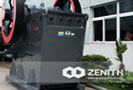
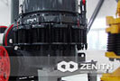
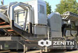
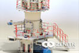
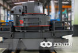

-
Crusher Machine
Crusher machine is mainly used for processing the stone,according to the different working principle and product size, which can divided into many types.
view more details -

Grinding Mill
Grinding mill is widely used in metallurgy, building materials, mineral products, chemical materials, mining and other industries.
view more details -
Mobile Crusher
Mobile crusher provides a new field of business opportunities for contractors, quarry operators, recycling and mining applications.
view more details
Crushing Equipment
- 
Jaw Crusher
jaw crushers are mainly used in the metallurgical industry, mining, construction and chemical industry.
-
Impact Crusher
Impact crusher often offer unbeatable performances in the secondary or tertiary crushing.
- 
Cone Crusher
Our cone crusher has a excellent tramp release system and unique hydraulic lifting system.
- 
Mobile Crusher
The mobile crusher has the advantages of easy transportation, low transportation cost etc.
products center
Shanghai Zenith is an international and professional company, which engages in power making equipment and mining equipment.
- 
Vertical Roller Mil
Vertical roller mill is a grinding processing equipment...
- 
Sand Maker
Sand making machine is easy and convenient to maintain...
-
PFW Impact Crusher
PFW series impact crusher also can be widely used in ...
PEW jaw crusher information
The information of Zenith Crusher Machine
PEW series jaw crusher Adopting the world's most advanced crushing technology, which can be considered as the expert of crushing equipment. As a professional manufacturer of mining equipment, Zenith never stop the exploration of producing more excellent crushing plants for mining industry.
Nowadays, the PEW Jaw Crusher in European style undoubtedly becomes the most welcome equipment as the crushing machinery and it's mainly used in the metallurgical industry, mining industry, construction and chemical industry. Our customers often choose it to deal with hard materials due to its high efficiency and reliable performance. In addition, the price and cost of PEW jaw crusher will never let you down.